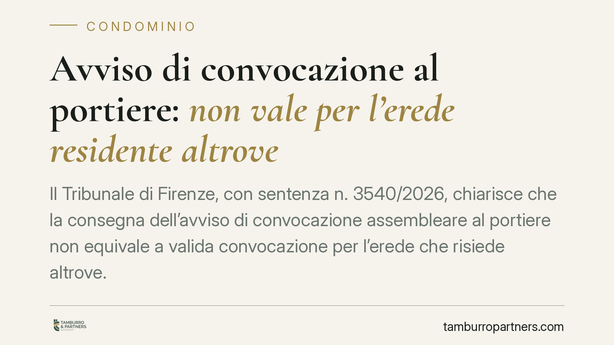

Avviso di convocazione al portiere: non vale per l'erede residente altrove
Il Tribunale di Firenze, con sentenza n. 3540/2026, chiarisce che la consegna dell'avviso di convocazione assembleare al portiere non equivale a valida convocazione per l'erede che risiede altrove. L'onere di provare la ricezione grava sul condominio e il termine per impugnare la delibera decorre dalla conoscenza effettiva del verbale. Una pronuncia che incide sulla gestione pratica delle convocazioni.

Il caso
Un erede, non residente nell'edificio condominiale, impugnava una delibera assembleare sostenendo di non essere stato regolarmente convocato. Il condominio opponeva che l'avviso era stato consegnato al portiere dello stabile. Il Tribunale di Firenze ha dato ragione all'erede: l'avviso lasciato al portiere non raggiunge chi abita altrove e, quindi, non produce gli effetti di una valida convocazione.
La pronuncia conferma un principio spesso trascurato nella prassi amministrativa: la comodità operativa della consegna al portiere non può sacrificare il diritto del condomino a essere realmente informato.
Inquadramento normativo
L'art. 66 disp. att. cod. civ. impone che l'avviso di convocazione, con l'indicazione dell'ordine del giorno, sia comunicato a ciascun condomino almeno cinque giorni prima dell'adunanza in prima convocazione. La norma richiede una comunicazione ricettizia: deve cioè raggiungere la sfera di conoscibilità del destinatario.
Qui entra in gioco l'art. 1335 cod. civ., secondo cui gli atti ricettizi si reputano conosciuti nel momento in cui giungono all'indirizzo del destinatario, salvo prova che questi, senza sua colpa, è stato nell'impossibilità di averne notizia. Il portiere può essere soggetto idoneo a ricevere la comunicazione per i condomini che abitano nell'edificio: in quel caso l'avviso entra comunque nella loro sfera di controllo. Ma per chi risiede altrove la consegna al portiere non costituisce recapito presso l'indirizzo del destinatario, perché quel soggetto non ha alcun collegamento stabile con la portineria.
Di conseguenza, ai sensi dell'art. 1137 cod. civ., il termine di trenta giorni per impugnare la delibera decorre, per l'assente non validamente convocato, non dalla data dell'assemblea ma dalla conoscenza effettiva del verbale.
Implicazioni pratiche
La decisione sposta un equilibrio importante. In primo luogo, ribadisce che l'onere della prova della regolare convocazione grava sul condominio: è l'amministratore a dover dimostrare che l'avviso è stato ricevuto, non il condomino a dover provare di non averlo ricevuto.
In secondo luogo, individua un soggetto a rischio: l'erede. Alla morte di un condomino, l'amministratore deve aggiornare l'anagrafe condominiale (art. 1130, n. 6, cod. civ.) e reperire i recapiti effettivi dei nuovi titolari. Continuare a convocare all'indirizzo dello stabile, o affidarsi al portiere, espone la delibera al rischio di annullamento.
Infine, la pronuncia ha un effetto a catena sulla stabilità delle decisioni assembleari: finché l'erede non convocato non ha conoscenza effettiva del verbale, la delibera resta esposta a impugnazione, con incertezza su spese, lavori e contratti già avviati.
Cosa fare in concreto
- Aggiornate l'anagrafe condominiale a ogni variazione di titolarità, richiedendo per iscritto i recapiti aggiornati di eredi e nuovi proprietari, inclusi indirizzo di residenza, PEC o email.
- Convocate ai recapiti effettivi del destinatario: per chi non abita nello stabile usate raccomandata con avviso di ricevimento o PEC, non la consegna al portiere.
- Conservate la prova della ricezione di ogni avviso: avvisi di ricevimento, ricevute di consegna PEC, dichiarazioni firmate. In caso di contestazione l'onore della prova è vostro.
- Verificate la posizione degli eredi in presenza di successioni recenti: fino al reperimento dei nuovi titolari, valutate con il legale la tenuta delle delibere adottate.
- Se siete l'erede non convocato, agite tempestivamente dalla conoscenza del verbale: il termine di trenta giorni decorre da quel momento e va documentato.
La regola di fondo è semplice: una convocazione serve a far partecipare, non a formalizzare un adempimento. Quando l'avviso non raggiunge realmente il destinatario, la delibera che ne deriva nasce fragile.
---
*Contributo informativo a cura di Tamburro & Partners - Avv. Giuseppe Tamburro. Non costituisce parere legale.*
Ogni condominio ha una storia a sé.
Se gestisci un'amministrazione e vuoi un confronto su una specifica questione condominiale, scrivi allo studio. Ti rispondiamo entro un giorno lavorativo.